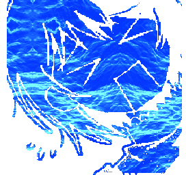
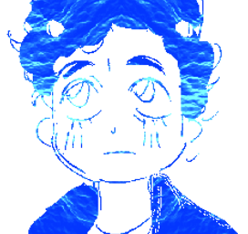

* The prophecy may be unstable on MOBILE.
* ... hi! to
put it
short, this is a site special to our
DID
for a short intro on how it affects me.[1]
[1]
required "this disorder is very different for everyone because it is a trauma
disorder and please do not base the identity of your trauma off of mine" disclaimer because it's
happened before
[...?] we have a lot of varying mental disorders⠀ ――⠀ all of which play into our behavior in some way. it makes us prone to episodes of strong irritation, exhaustion, or isolation putting it lightly, meaning it's hard to consistently contact me a lot of the time. please keep this in mind when we interact! it also means 9/10 times if we're distant it's nothing to do with you
please treat us as parts of a whole! we are separate in terms of our identities, so please refer to us as... us, however, do not treat us entirely as individuals. think of it more like a soul haunting a vessel.
we're relatively closed off about specfics of our disorder(s) outside of certain tidbits or if it comes up in conversation. we do, however, have very strong opinions about a lot of system-oriented topics and love to discuss them.
collectively, we ⠀
despite there not being many of us, frequent fronters shift easily⠀ ――⠀ so a lot of communication is limited. only a handful (those below) are fully formed and have public profiles that we're okay with sharing. (that being said, we only have a couple up right now cause we're lazy with sitemaking... sorry! )
the rest you'll have to find scattered about like slenderman's pages. collect my alters.

